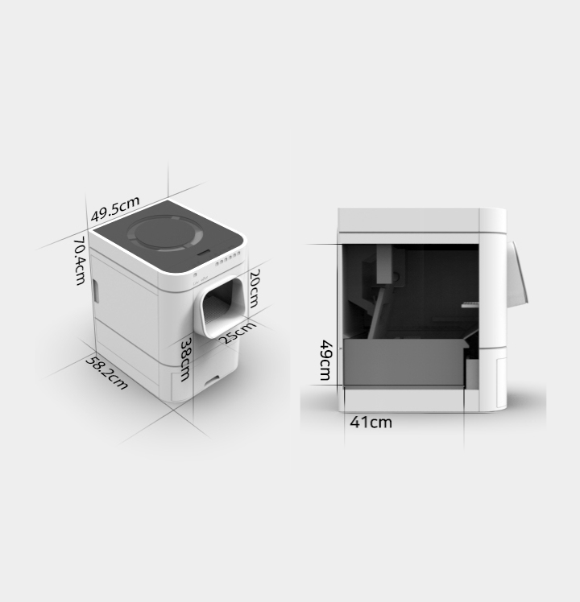

타사 제품 대비 면적 차지 20% 감소
W49.5 X D 58.2 X H 70.4 cm
라비봇은 타사의 자동화장실이 차지하는 면적보다 20% 이상 작으면서 집안의 인테리어에 자연스럽게 배치할 수 있는 최적의 사이즈와 형태를 고려해 디자인 되었습니다.
타사 제품 대비 면적 차지 20% 감소
W49.5 X D 58.2 X H 70.4 cm

( 7.5kg 거묘 실제 사용영상)
발판 및 다른 공간들을 제외하고, 배변을 볼 수 있는 공간이 가로 31.5cm, 세로 43cm, 높이 36cm로 되어 있어 메인쿤, 사바나캣 이외의 대부분 고양이들이 사용할 수 있습니다. 또한 타사 대비 50% 이상 많은 모래(약 6리터)가 들어가도록 되어 있어 우리 아이들이 안락한 화장실 사용이 가능합니다.
라비봇의 배설물 저장통은 고양이 한 마리 기준으로 최대 3주에 한번만 버려도 될 정도로 넉넉한 사이즈 ( 41*12*16 cm ) 를 가지고 있으며, 저장통에 비닐봉지를 손쉽게 씌워 사용 가능하도록 설계되어있습니다.
심플하게 구성된 LED 표시등을 통해 제품 내부 상태를 쉽게 알 수 있으며 라비봇의 동작 상태를 파악할 수 있습니다. 또 표시등과 연관된 동작 버튼을 바로 하단부에 배치해 사용자로 하여금 직관적으로 버튼의 기능을 인지 할 수 있도록 하였습니다.
라비봇은 최대 3종류의 센서를 이용해 고양이를 인지합니다. 그리고 앞면에 조작버튼을 배치하여 고양이가 버튼을 누르지 못하도록 안전을 먼저 생각하였습니다. 만약 자동 청소 중 고양이가 들어가게 되는 경우, 앞쪽에 위치한 적외선 센서를 통해 고양이를 즉시 인지하고 배설물 분리기가 대기상태로 빠르게 전환됩니다. 이를 통해 고양이가 언제든지 라비봇을 안전하게 이용할 수 있습니다.
고양이 발가락 사이의 모래가 빠져나갈 수 있도록 적정 위치에 발판을 배치하여 반려인의 집이 화장실 모래로 더러워지지 않도록 예방합니다.